The team
I was part of an ambitious project to revamp the user journey, order process, and customer experience — aiming to make Jugnu the most intuitive B2B app in the market. Our team consisted of a Product Manager, a UX researcher, and a UI/UX designer (me).
Project summary
We started noticing a trend in cart abandonment, drop-off, a declining DAU/MAU ratio, and a decrease in overall ordering. To evaluate the reasons behind it, we broke down the user journey to identify the problems retailers were facing and examined the pain points of the experience. This led us to completely revamp the app and launch a Jugnu 2.0 version, with more intuitive workflows, a better user journey, and an improved overall experience.
Objectives to target
We set some high-level goals to target, so we could cross-check the metrics and value the impact we created.
- Increase app launches and Daily Active Users
- Decrease cart abandonment
- Upsell more stock and increase monthly order value per user
User journey
Mapping the ideal path from login to a confirmed order — and where retailers could branch off to explore manufacturers or keep browsing — showed us exactly where the experience needed the most work.
Kick off — discovering the problem space
We partnered with our field team (JDosts) to get out into the market and observe retailers actually using the app. Interviews mapped their problems directly against what we were seeing in our own system and internal audits.
Empathy map
Says
- The rates are too high
- The assortment is too less
- Can't see relevant campaigns on app
Thinks
- Other apps are better
- They don't have what I need
- Low faith in the app
Does
- Installs all other B2B apps
- Compares prices and workflows
- Asks the OB to place the order
- Uses a calculator to figure out the discounts
Feels
- Frustrated, disappointed
- Ill feelings for Jugnu
- Feels cheated
- Inclined towards deleting the app
Customer journey map
After gathering enough data through market visits, customer feedback, and analytics, we mapped out the workflow stage by stage to highlight which areas we could improve the most.
| Stage 1 | Stage 2 | Stage 3 | Stage 4 | Stage 5 | |
|---|---|---|---|---|---|
| Actions | Launches the app | Finds the product he needs | Adds to cart | Goes to checkout | Order history |
| Emotions | Exploratory, calm, open | Frustrated, angry | Frustrated, angry, no trust | Exhausted, took too much time | Confused |
| User experience | One banner on top giving information. Categories listed for navigation | Has to go in every category to look for it. Search is inaccurate | Delay in adding to cart or editing quantities. Manually calculating discounts and total | Checking out the visibility of the order is skewed. Goes over the list and confirms order | Order moved to history without being serviced. Can't figure out where to view it |
Competitor analysis
We audited how other B2B and grocery apps solved the same problems: categories and subcategories listed together, tile-style browsing for easy ordering, an accessible cart, clear quantity and pricing shown upfront, promotions surfaced before checkout, and popups used to avoid back-and-forth navigation between pages. Those patterns directly shaped the redesign that followed.
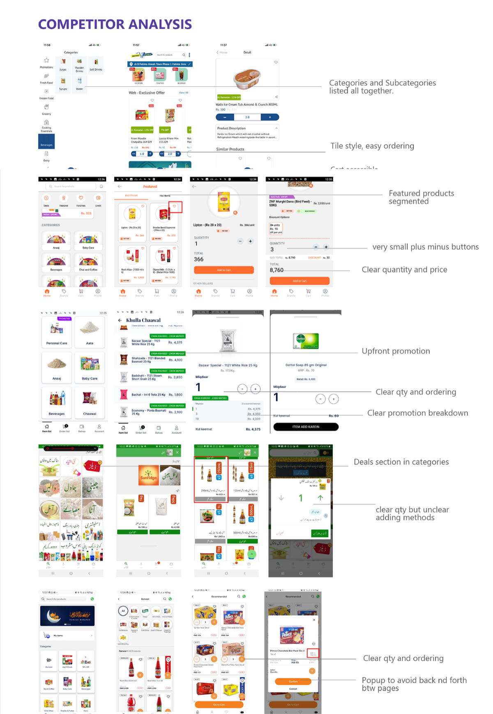
Defining outcomes and opportunities
High-level goals
- Make the user experience intuitive and user friendly
- Display the information clearly and decrease reliance from order bookers
- Increase order value, convert DAU to MAU, and encourage upselling of products
- Give visibility to challenges and promote better understanding of our credit system
Opportunities identified
- Make a promo page that shows campaigns and discounts upfront
- Let the user navigate and explore the app in a way that surfaces products he used to miss earlier
- Revamp challenges and campaigns to make them more understandable, clearly mentioning the terms and conditions
- Make the cart easily accessible and show his progress on his ordering status upfront
The redesign
We started with wireframing on paper to explore different layout options, then translated them into low-fidelity prototypes — testing several formats for how a retailer would add an SKU to cart.
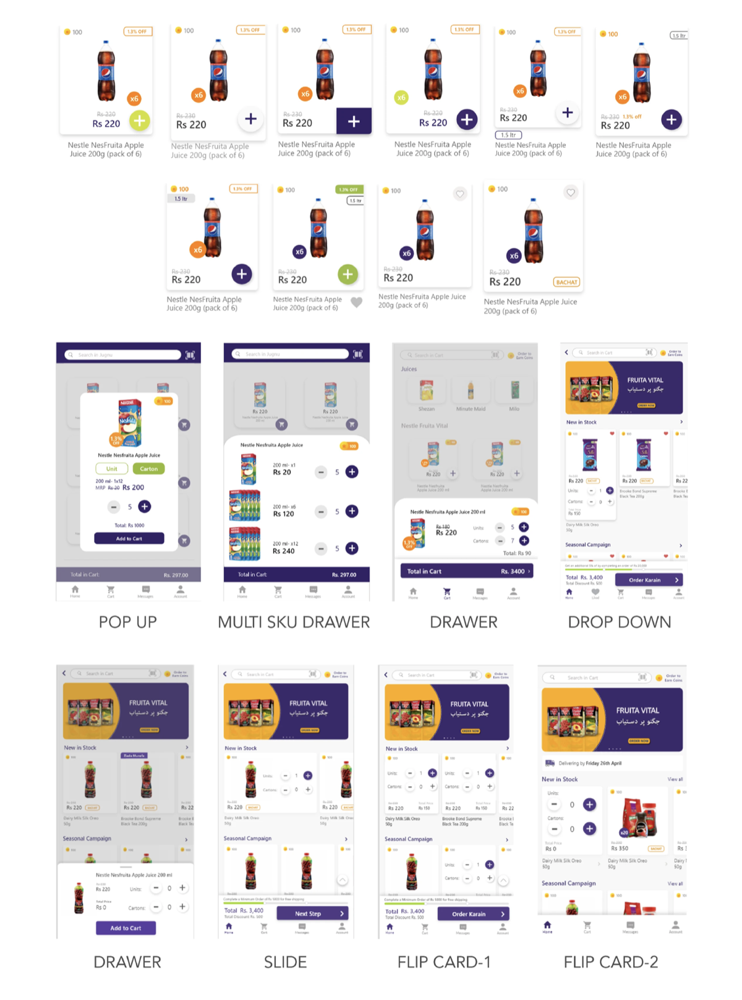
Market testing
We put the leading formats in front of real retailers to see which one they actually understood and could use unassisted.
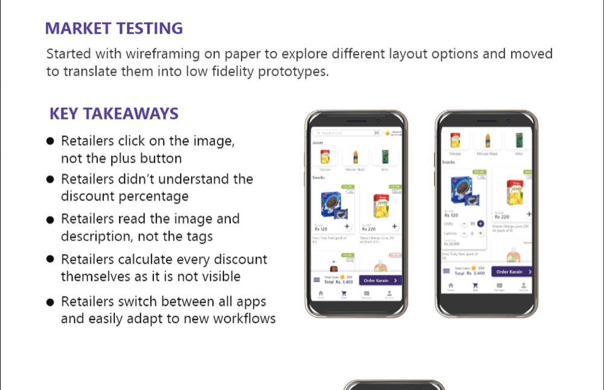
Key takeaways
- Retailers click on the image, not the plus button
- Retailers didn't understand the discount percentage
- Retailers read the image and description, not the tags
- Retailers calculate every discount themselves as it is not visible
- Retailers switch between all apps and easily adapt to new workflows
Problem → solution
The problem
SKU browsing
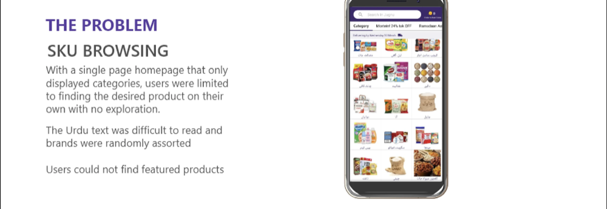
With a single-page homepage that only displayed categories, users were limited to finding the desired product on their own with no exploration. The Urdu text was difficult to read and brands were randomly assorted. Users could not find featured products.
The solution
Homepage carousels
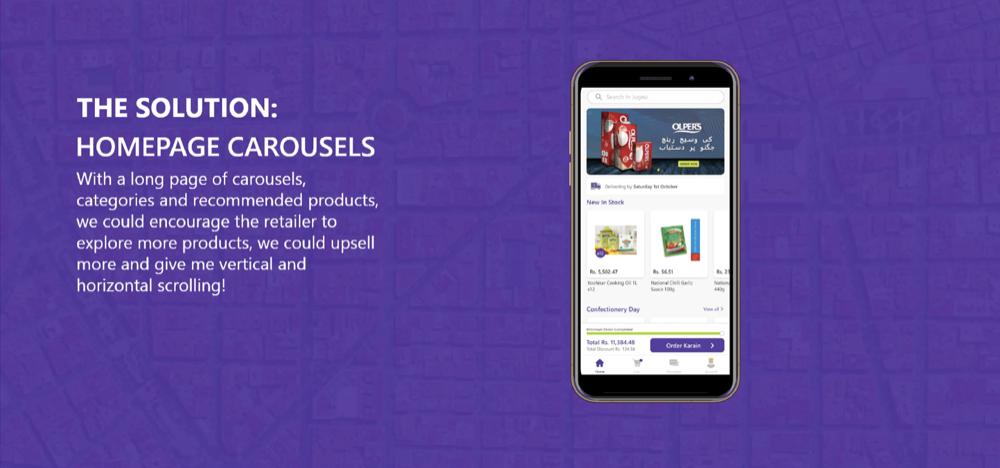
With a long page of carousels, categories, and recommended products, we could encourage the retailer to explore more products, upsell more, and give him vertical and horizontal scrolling.
The problem
Lost campaigns
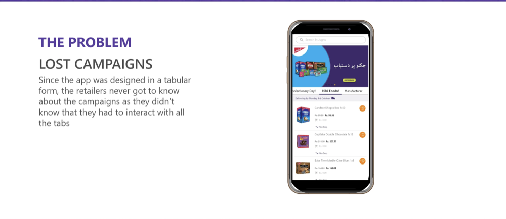
Since the app was designed in a tabular form, retailers never got to know about the campaigns — they didn't know they had to interact with all the tabs to find them.
The solution
Upfront campaigns
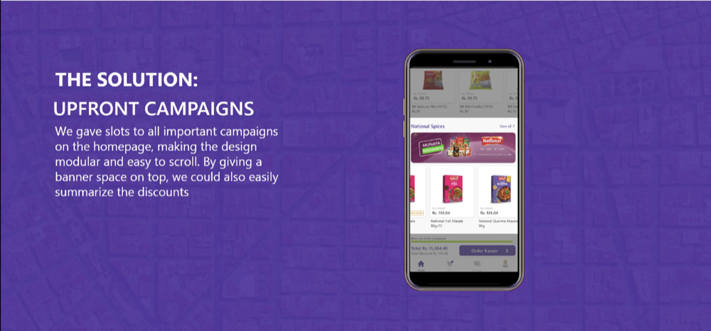
We gave slots to all important campaigns on the homepage, making the design modular and easy to scroll. A banner space on top let us summarize the discounts at a glance.
The problem
Cognitive overload
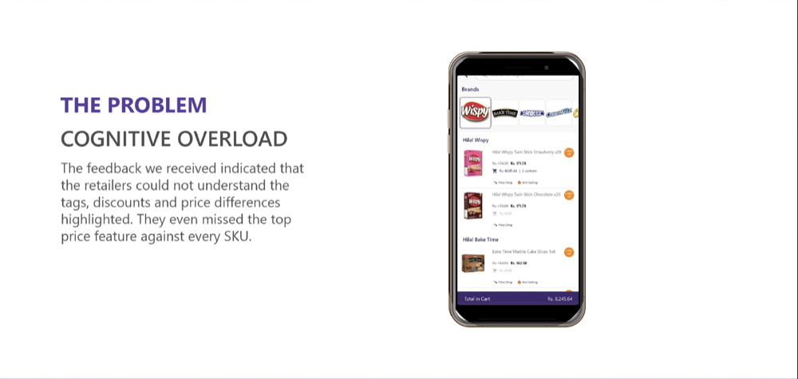
Feedback showed retailers could not understand the tags, discounts, and price differences highlighted. They even missed the top price feature against every SKU.
The solution
Drawer modals
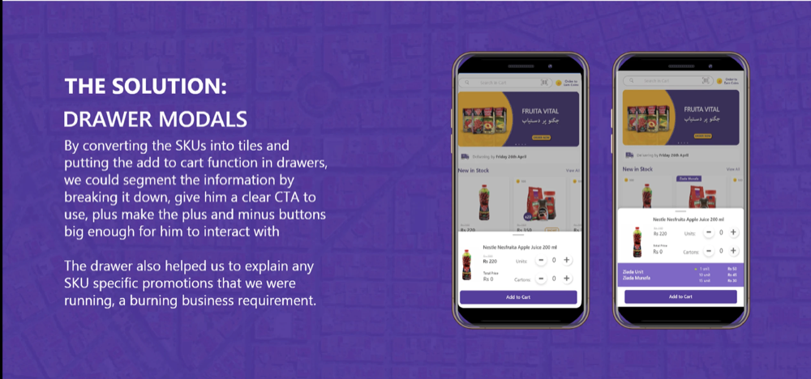
Converting SKUs into tiles and moving "add to cart" into drawers let us segment the information, give a clear CTA, and make the plus/minus buttons big enough to actually interact with — plus explain any SKU-specific promotions running.
The problem
Discount breakdown
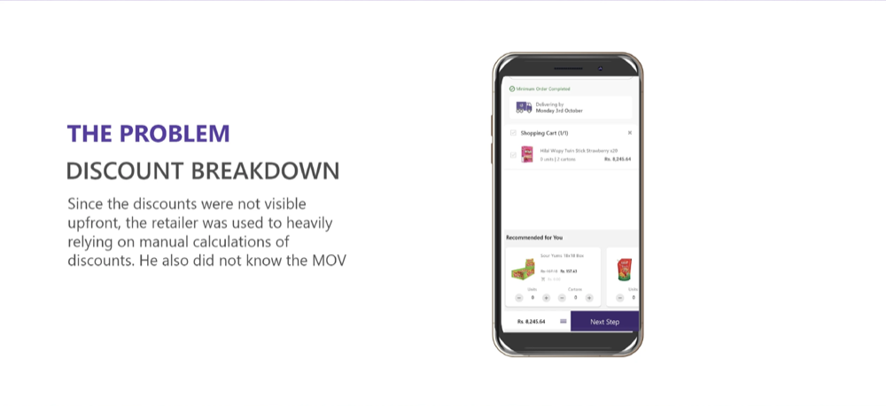
Since discounts weren't visible upfront, retailers heavily relied on manual calculations — and didn't know their minimum order value (MOV).
The solution
Upfront visibility
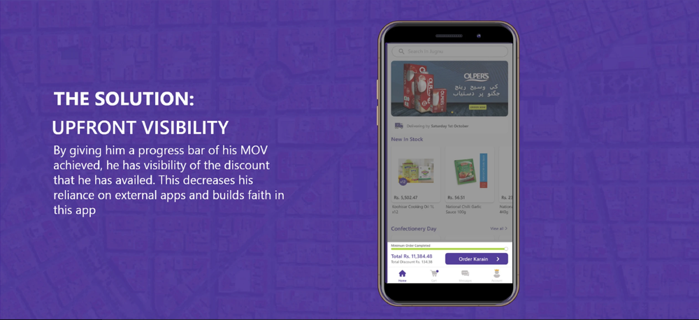
A progress bar of MOV achieved gives the retailer visibility into the discount he's availed — decreasing reliance on external apps and building faith in this one.
UI revamp for a better experience
Challenges redesign
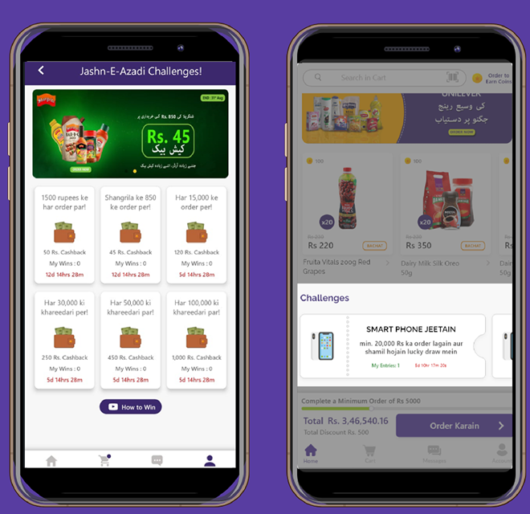
The challenges designed first were hard to understand — the clubbed information was repetitive. We changed the look and feel to segment the information better.
Account page redesign
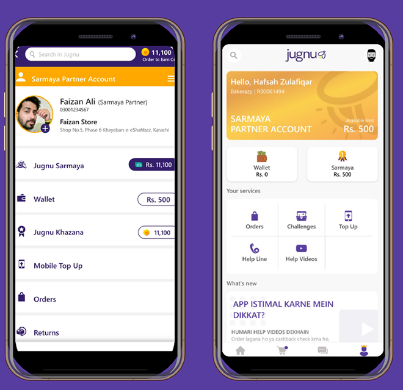
Redesigned the account page for scalability of future features, to include demo videos, upfront visibility of the credit program, and to segment credit users from the rest of the userbase as a premium feature.
Order detail redesign
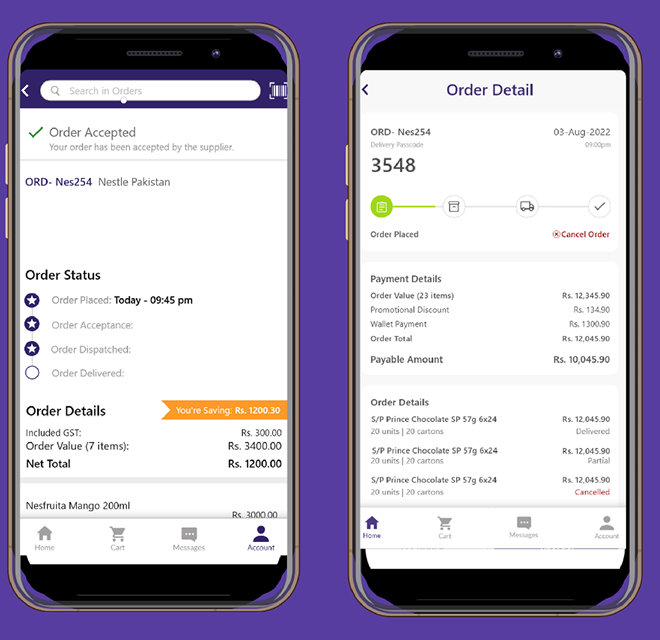
Redesigned the progress of the order status with clear details on the order value, discount unlocked, challenges participated in, and wallet/credit amount used.
Order confirmation
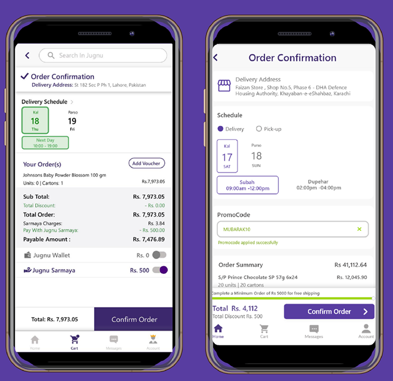
Following the new design system, we re-did these screens with a slot for promo codes and room to scale the delivery-schedule picker in the future.
Beta test results
We got great results from our beta test — indicating more app launches, more users interacting with the app, more orders, and increased GMV. After the success of the beta, we proceeded to upgrade the app for the entire userbase.